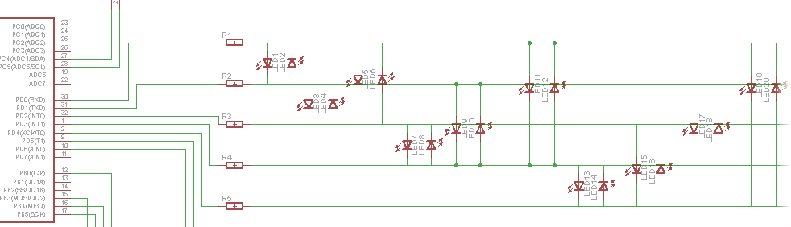
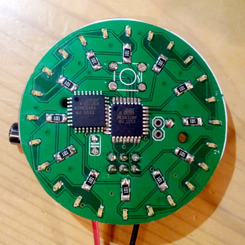

Summary
The conjonction of a few facts lead me to this one-afternoon-straight-to-production PCB design:
- I saw this LED ring that I found beautiful but very overpriced (45 USD ? Come on !) http://www.adafruit.com/products/1575
- I scored a sh*tload of extra small LED in my 福袋 Lucky bag at Akizuki this year (really, counts by the hundreds). They are orange and really small : 0.6mm x 1.4mm (makes package SOD-723)
- I had a handful of ATmel SMD chips that I wanted to use bought on eBay (more on that later)
- The usual boredome x curiosity
I made a square board with a round outline on the silk and a few holes on the side so I can but and sand it. Why didn't I make it round from the start and saving me some cutting-and-filing job?
'Cause I didn't know I could! Now I know, saw some tutorials on the net. Maybe for a later iteration?
Fun facts: I had the
chance to discover that my cheap Atmega8a were cheap for a reason ... they were fake. Bought it on eBay at a seller I used many times, always a success ... until that time. Soldered all by hand and nothing happened. Soldered another chip on another board, checked everything: everything seems fine, but nothing happens. Checked my circuit, re-read the documentation of the chip in details (I had the case of the special
ATmega64a strange pinout), plugged my signal analyzer : everything looks ok, but no answer from the chip itself. Soldered a Atmega328a (pin compatible) to counter check: bingo, working no problem. 5 bucks lost on nice pieces of plastics with metal legs sticking out ... I will survive. Another life lessons learnt the hard way from eBay.
PCB schema
On google code SVN :
http://code.google.com/p/alanarduinotools/source/browse/trunk/#trunk%2Feagle%2FCirclez
PCB charlieplexing
Charlieplexing is a great technique, but how to make it look nice on your schema (not talking about the PCB itself). I constructed my version 1 based on the sample found on Wikipedia, by making recursive-like structure. Works fine with 3 pins, but when you start adding more, things get messy. I tried one version continuing to do some "clusters", but in the end I was not driving the number of leds I expected.
After some search on the internet, I
found this page and everything came into light: it's like a simple binary counter (maybe I'm the only one to see it like that?). Anyway, make a scale with the pins, drawing long horizontal nets. And place leds pairs one by one between the new wire and all the pre existing other wires, adding one new wire each round.

Code
Google code :
http://code.google.com/p/alanarduinotools/source/browse/trunk/#trunk%2FAtmegaxx8%2FCirclezDemo
Pictures

The board with a fake Atmega8a to the side.